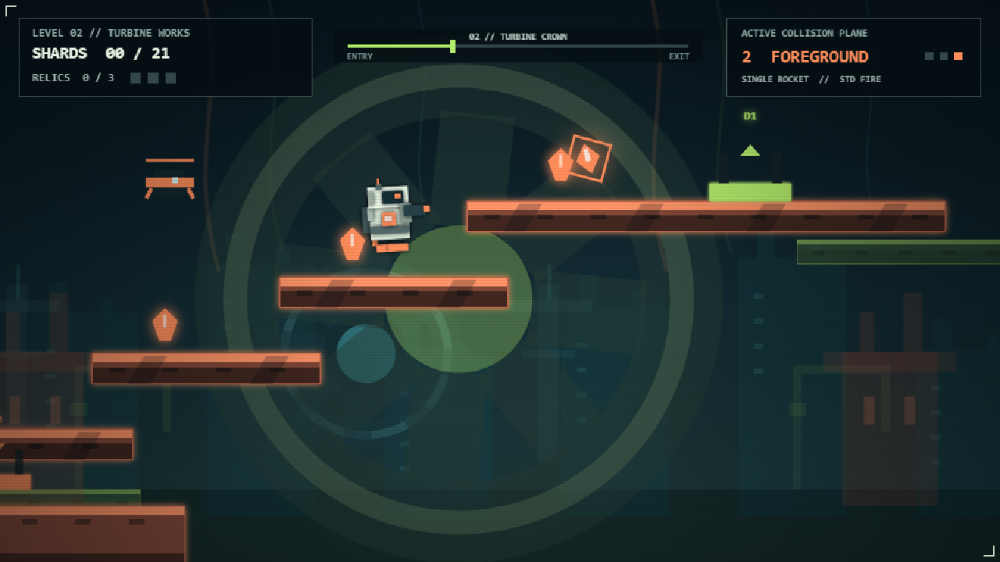

Depth Perception is a short atmospheric platform game about crossing three versions of the same place. The player follows a recurring door while learning that visual certainty and mechanical truth are not the same thing.
3states of reality
1recurring objective
2Dplatform play
15–20minute target
Thirty-second pitch
The shortest route is not always the one that looks real.
01 / GOAL
Find the door.
A recurring door anchors every stage. Its appearance changes, but its function gives the player a stable objective.
02 / ACTION
Shift the reading.
Move through layered spaces and commit to routes that may be stable, false, or impossible under ordinary logic.
03 / RISK
Test the image.
Fog conceals. Figures invite interpretation. A platform can look convincing without being physically reliable.
04 / PAYOFF
Learn new truth.
Progress comes from understanding which rules remain dependable as the world abandons realism.

Inherited foundation
A working mechanic, redirected.
Three readable visual planes and scale changes
Consistent movement, jumping, and collision
Transition pads that teach plane changes
Collectibles that reward scanning the whole space
Original art and code ready to be re-themed
Actual Phase Shift Foundry prototype capture. The new project preserves the technical lesson, not the foundry setting.
Player verbs
Familiar inputs make an unfamiliar world playable.
MoveRead the active platform and maintain rhythm.Grounds the player in a conventional 2D language.
JumpTest gaps, surfaces, and route assumptions.Turns visual trust into a physical decision.
Shift depthMove between layered interpretations of the scene.Reveals that background may be navigable, not decorative.
ObserveNotice the door, figure, fog, and repeated structures.Builds a personal theory of what is real.
CommitChoose a route before certainty is available.Makes uncertainty a mechanic rather than an effect.
!
Fairness contract
Uncertainty belongs in perception—not input latency or arbitrary collision.
False surfaces receive subtle advance tells. Transitions are authored, not random. A failed jump teaches something useful. The UI stays stable and the player always retains control.